Part 5 · Model evaluation · Chapter 8
DSI
Degree of spatial interpretability
The question
How much of the spatial structure of my variable has each model absorbed, and how much is still left in its residuals?You need
One point table with longitude and latitude, the observed y, and one field of out-of-sample residuals (or predictions) per model. At least 30 complete rows.You get
For every model, the share of spatial autocorrelation and of spatial heterogeneity it explains (η), the DSI range θ₁ to θ₃, and R², RMSE and MAE next to them. Since version 1.6.0 also maps of a local DSI.1The method
The idea
R², RMSE and MAE say how close a model's predictions are to the observed values. They do not say whether the model has captured the spatial structure of the variable. A model can be accurate on average and still leave residuals that are clustered on the map, or that differ from one kind of place to another. DSI looks at exactly that: it measures a spatial characteristic in the observed y, measures it again in the model's residuals, and reports the share that is gone.
Two characteristics are measured, each with an indicator δ:
| Characteristic | Indicator δ | How it is computed |
|---|---|---|
| Spatial autocorrelation (a) | Moran's I | With row-standardised weights of the k nearest neighbours of each point |
| Spatial heterogeneity (h) | The q statistic of the geographical detector | Over strata that are the leaves of a regression tree of y on the predictors |
η = (δ₀ − δr) / δ₀
δ₀ is the indicator of the observed y and δr the indicator of the model's residuals. η is computed for autocorrelation (ηa) and for heterogeneity (ηh).
θ₁ = min(ηa, ηh), θ₂ = max(ηa, ηh), θ₃ = 1 − (1 − ηa)(1 − ηh)
η near 1 means that the residuals keep almost none of that structure. η near 0 means that the model absorbed none of it. A negative η means that the residuals carry more of the structure than the data did. The three θ values combine the two η into a range: θ₁ is the lower end, θ₃ the upper end, and θ₂ lies between them. In the tables they are the columns theta_min, theta_probable and theta_max.
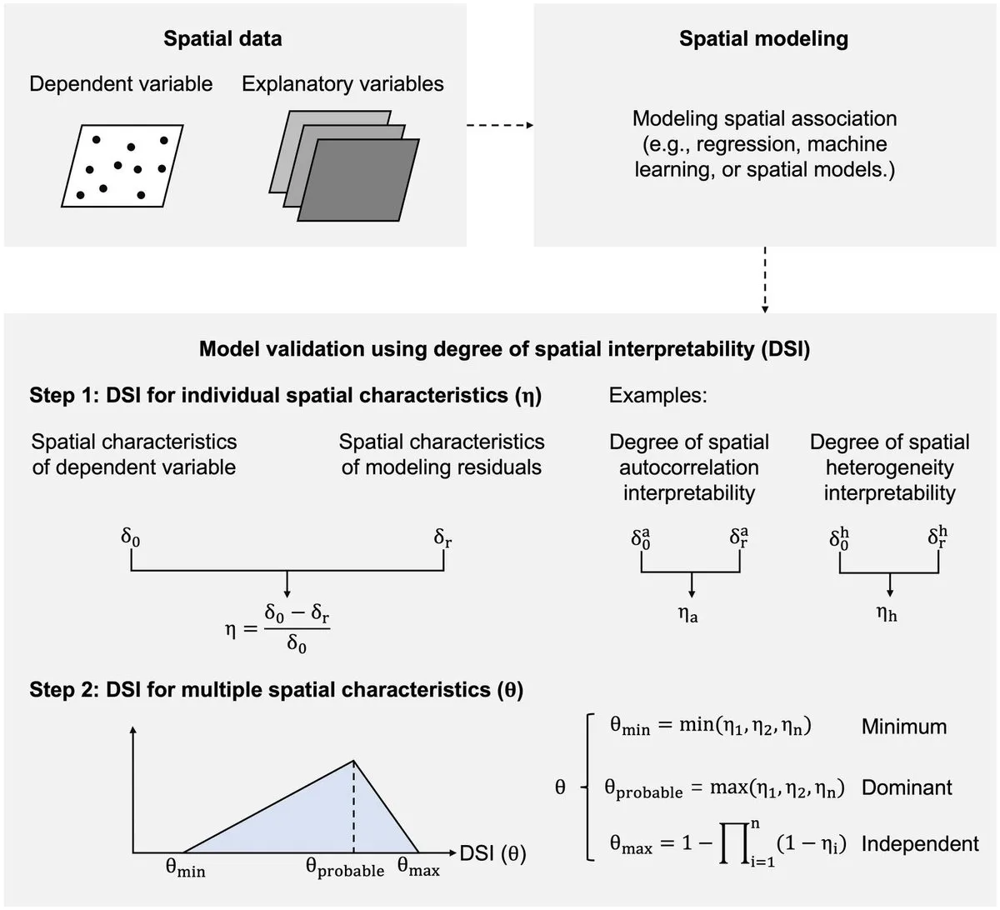
When to use it
- You have fitted one or more prediction models elsewhere (machine learning, regression, any method) and want to compare them on spatial structure as well as on accuracy.
- You want to know which kind of structure a model misses: clustering of similar values (autocorrelation) or differences between kinds of places (heterogeneity).
- You need a number for a paper that says how much spatial pattern is left in the residuals.
Where it has been used
| Field | Response y | Spatial unit | Study |
|---|---|---|---|
| Plant diversity | Species richness | 0.5° grid cell | Liu et al. (2026) |
| Forest biomass | Above-ground biomass of trees | Sample plot | Liu, Song, Yi & Zhang (2026), with DG, the local form of DSI, which is outside Heterra |
Any set of points with coordinates, one numeric response and the held-out residuals of one or more models fits.
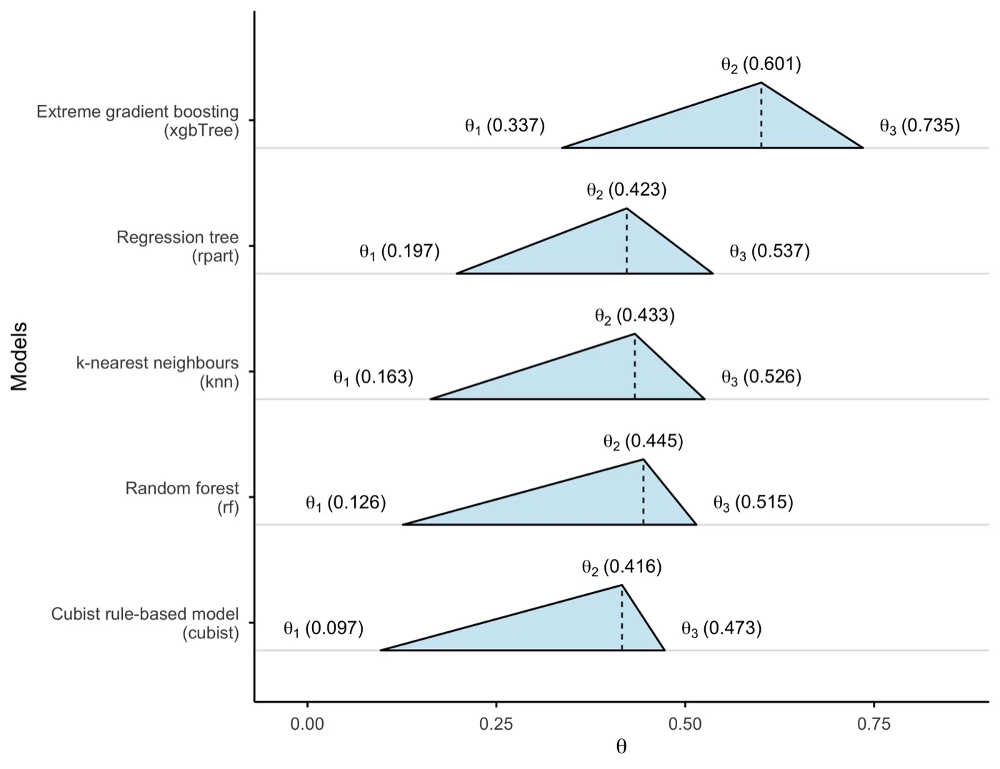
Keep in mindDSI describes the residuals you give it. It does not fit, tune or validate a model, and a high θ does not make a model accurate: accuracy and spatial interpretability can rank models differently, so report both.
2In Heterra
2.1 Prepare your data
Heterra does not fit the models. You build them in your own software and bring one table of results. To make that table:
- Hold out data the model does not see: a test set, or the folds of a cross-validation.
- Fit each model on the rest and predict the held-out points.
- For every held-out point write one row: its longitude and latitude, the observed y, and for each model the residual (observed − predicted). You can store the predictions instead; Heterra then computes y − prediction.
- Add the predictors if you want the strata of q to come from a regression tree, as in the paper.
Save the table as CSV, shapefile, GeoPackage or GeoJSON (Part 1 shows how to add data). Since version 1.6.0 the layer may also be polygons or a regular grid; the location of each row is still the pair of coordinate fields you choose (for a layer with geometry, Geometry X and Geometry Y are offered too).
| Field | Type | In the example |
|---|---|---|
| Longitude, latitude | Numbers, WGS84 degrees | lon, lat |
| Dependent variable (observed y) | Number | y |
| Model fields, one per model | Numbers: residuals or predictions | error_rpart, error_rf, error_xgbTree, error_cubist, error_knn |
| Predictors (optional) | Numbers | temperature, precipitation, elevation, soil_ph, distance_km, noise_var |
| Boundary (optional) | A polygon layer | dsi_boundary: the outline drawn on the map and on the maps of the local DSI. It changes no result. |
A prefix error_ or residual_ (for predictions pred_, prediction_ or predicted_) is dropped from the model name, so error_rf appears as rf. The sign of the residuals does not affect DSI. The example has 310 simulated test points in an irregular study area across Australia, so its numbers illustrate the tool and do not describe a real study.
2.2 Run the example, step by step
Open the tool from the Toolbox (Model evaluation → DSI), click Tutorial, then Load Example. The test points and the study-area boundary appear on the map, and the panel on the right is filled in for you.
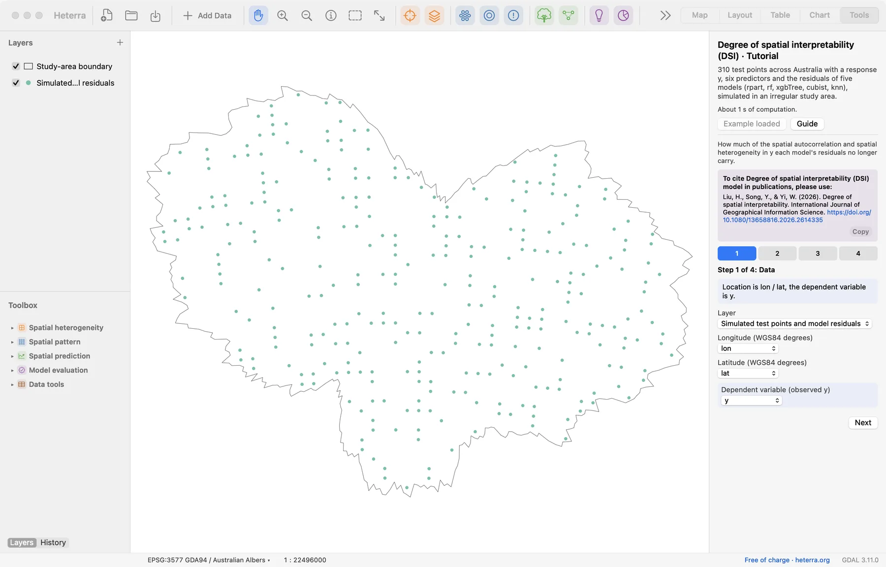
The panel has four steps. Next moves on; Run appears at the last step, because only that step computes.
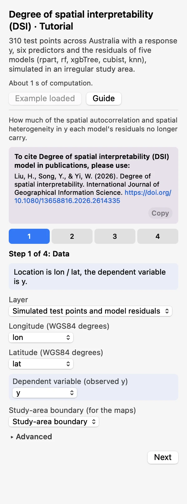
DataChoose the layer, Longitudelon, Latitudelatand the Dependent variable (observed y)y. The Study-area boundary (for the maps) is optional.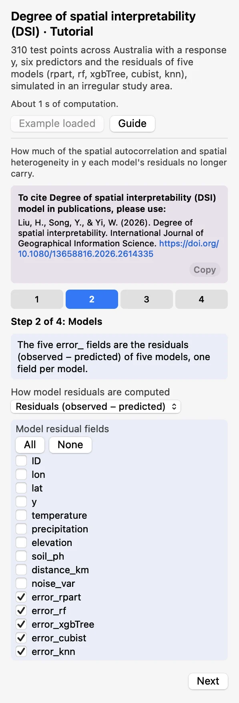
ModelsKeep Residuals (observed − predicted) and tick the fiveerror_fields under Model residual fields.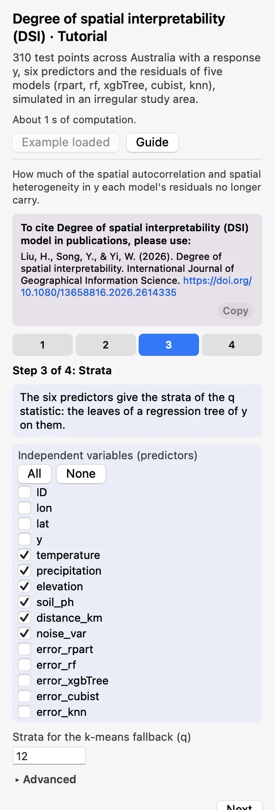
StrataTick the six predictors. They give the strata of q: the leaves of a regression tree of y on them.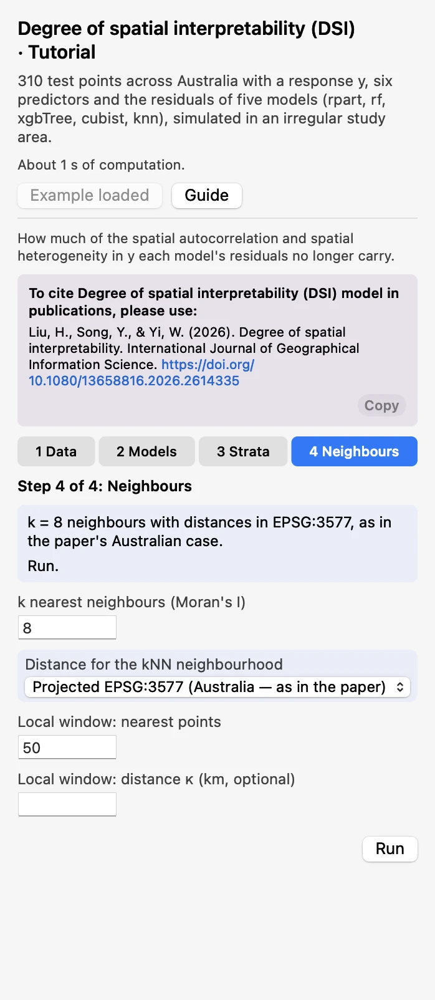
NeighboursKeep k = 8 and Projected EPSG:3577, the paper's Australian setting, and 50 for Local window: nearest points. Click Run.
The run takes well under a second. The Chart page opens with the θ range figure, and the panel lists every result under Outputs: the tables, the strata field, the figures, and since version 1.6.0 the local DSI fields and their two figures of maps. A green line says that the results match the reference results computed with R.
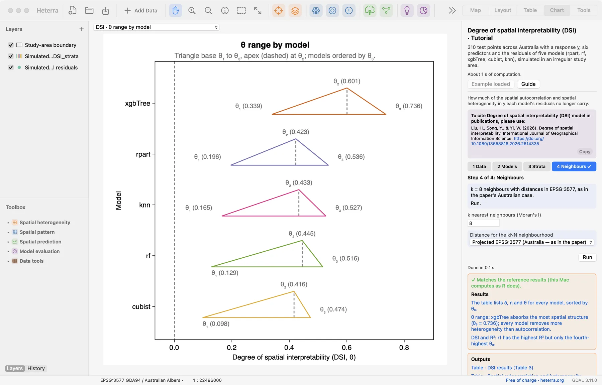
2.3 With your own data
- Add your table (Add Data), open DSI from the Toolbox and choose the layer, the coordinates and y in step 1.
- In step 2 say whether the model fields hold residuals or predictions, and tick one field per model.
- In step 3 tick the predictors the models used. In step 4 choose Great-circle, WGS-84 (any region) unless your study area is in Australia.
- Residuals should come from data the model did not see (a test set or cross-validation).
- Coordinates must be WGS84 degrees. Great-circle distances work anywhere; EPSG:3577 is for Australia only.
- Without predictors, q uses k-means strata of the coordinates. Their number is set by Strata for the k-means fallback (q) and is at most a tenth of the number of rows.
- Rows with a missing value in any selected field are dropped; the log says how many. At least 30 complete rows are needed.
- The local maps use windows of the nearest 50 points by default (Local window: nearest points, at least 10). To use a distance instead, type it in Local window: distance κ (km, optional): a window is then all points within that distance, and a window with fewer points than the number above takes the nearest points instead. These two settings change only the local fields and maps, never the tables.
- Column names are best written with English letters, digits and underscores.
3Reading the results
Read the results in this order: the δ and η table first (what structure is in the data, and what is left in the residuals?), then the θ range (how do the models compare?), then DSI against accuracy (do the two rankings agree?), then the strata and the diagnostics (can the numbers be trusted?), and last the local maps (where on the map?).
3.1 Autocorrelation and heterogeneity explained (δ, η)
The table Spatial autocorrelation and heterogeneity explained (δ, η) has one row per model. In the example the observed y has Moran's I δ₀a = 0.652 and q δ₀h = 0.453; these two values are the same in every row.
| Model | Moran's I of residuals | ηa | q of residuals | ηh |
|---|---|---|---|---|
| xgbTree | 0.431 | 0.339 | 0.181 | 0.601 |
| rpart | 0.524 | 0.196 | 0.262 | 0.423 |
| knn | 0.544 | 0.165 | 0.257 | 0.433 |
| rf | 0.568 | 0.129 | 0.252 | 0.445 |
| cubist | 0.588 | 0.098 | 0.264 | 0.416 |
What it shows. For each characteristic, the indicator of the data, the indicator of the residuals and the share η that the model explains. The table DSI results (Table 3) holds the same values with the p values of Moran's I and θ₁ to θ₃ added, in the layout of the paper's Table 3.
How to read it. Compare each residual value with the value of the data. The residuals of xgbTree have a Moran's I of 0.431 against 0.652 in y, so the model explains 34% of the autocorrelation (ηa = 0.339); the residuals of cubist still have 0.588, so it explains 10%. Then compare the two η columns: here every model removes more heterogeneity than autocorrelation.
"The response is spatially autocorrelated (Moran's I = 0.65, k = 8 nearest neighbours) and heterogeneous (q = 0.45 over regression-tree strata). The residuals of xgbTree retain a Moran's I of 0.43 and a q of 0.18: the model explains 34% of the spatial autocorrelation and 60% of the spatial heterogeneity (Liu et al. 2026)."
3.2 θ range by model
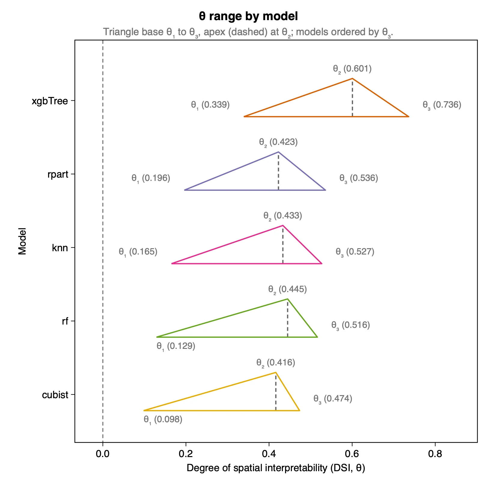
| Model | θ₁ | θ₂ | θ₃ |
|---|---|---|---|
| xgbTree | 0.339 | 0.601 | 0.736 |
| rpart | 0.196 | 0.423 | 0.536 |
| knn | 0.165 | 0.433 | 0.527 |
| rf | 0.129 | 0.445 | 0.516 |
| cubist | 0.098 | 0.416 | 0.474 |
What it shows. The DSI of each model as a range. θ₁ is the smaller of the two η and θ₂ the larger; θ₃ combines both.
How to read it. A triangle further to the right is a model whose residuals keep less spatial structure. xgbTree absorbs the most (θ₃ = 0.736) and its whole triangle lies to the right of the others. The other four models overlap: their θ₃ values lie between 0.474 and 0.536, and their order by θ₂ is not the order by θ₃. A wide triangle means that the model treats the two characteristics very differently, so look at ηa and ηh in the table before you summarise the model with one number.
"The degree of spatial interpretability is highest for xgbTree (θ₁ = 0.34, θ₂ = 0.60, θ₃ = 0.74). The other four models are close to each other (θ₃ from 0.47 to 0.54), and all five explain more spatial heterogeneity than spatial autocorrelation."
3.3 DSI and accuracy metrics
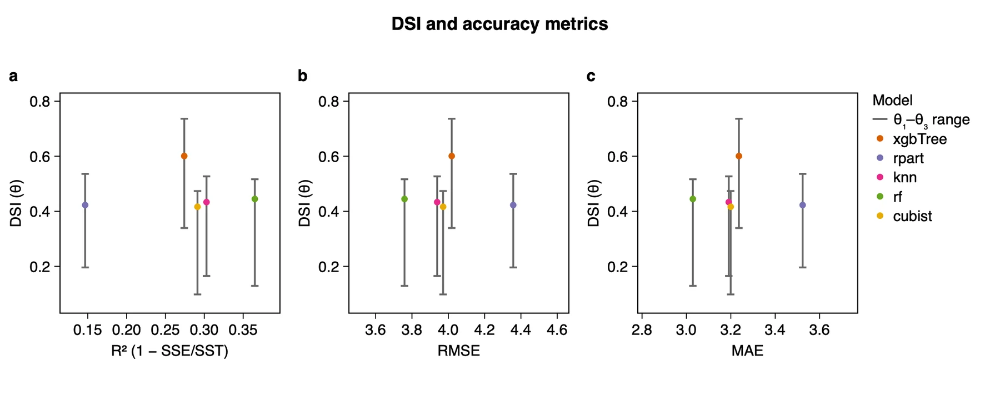
| Model | R² | RMSE | MAE | θ₃ |
|---|---|---|---|---|
| xgbTree | 0.274 | 4.019 | 3.236 | 0.736 |
| rpart | 0.147 | 4.358 | 3.524 | 0.536 |
| knn | 0.303 | 3.939 | 3.191 | 0.527 |
| rf | 0.365 | 3.759 | 3.029 | 0.516 |
| cubist | 0.291 | 3.971 | 3.199 | 0.474 |
What it shows. The accuracy of each model, computed from the same residuals, against its DSI. R² is 1 − SSE/SST, not the squared correlation.
How to read it. If accuracy and spatial interpretability agreed, the points would rise from left to right in panel a and fall in panels b and c. Here they do not: rf has the best R², RMSE and MAE but only the fourth-highest θ₃, and xgbTree has the highest θ₃ with the fourth-highest R². Accuracy and spatial interpretability rank models differently, so a model chosen on accuracy alone can leave more spatial structure in its residuals than a less accurate one.
"Accuracy and spatial interpretability rank the models differently. Random forest is the most accurate model (R² = 0.36, RMSE = 3.76, MAE = 3.03) but has only the fourth-highest DSI (θ₃ = 0.52), whereas xgbTree has a lower R² (0.27) and the highest DSI (θ₃ = 0.74)."
3.4 Strata and diagnostics
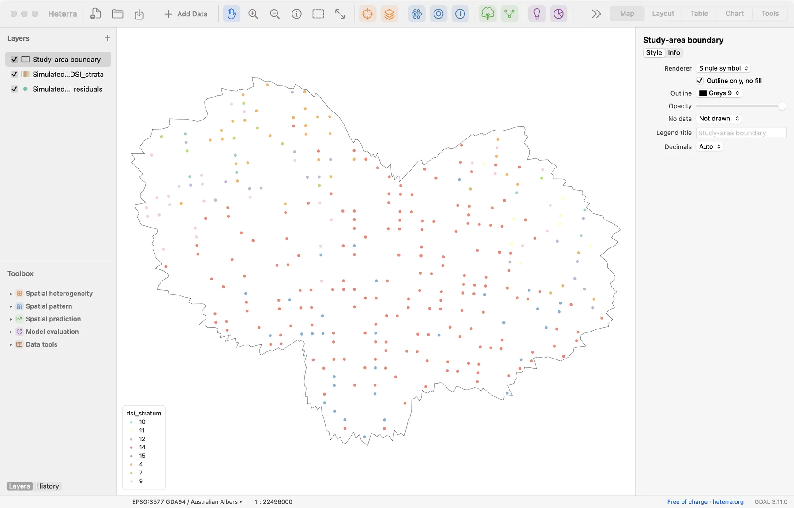
dsi_stratum.What it shows. The run adds a copy of the layer with the field dsi_stratum: the stratum of each row that q was computed on. The map colours the points by stratum. The example has 8 strata, the leaves of the regression tree; the labels in the legend are the tree's leaf numbers, not ranks.
How to read it. q depends on the strata, so check that they are sensible: several strata, none with only a handful of points. An RColorBrewer palette has at most 12 colours, so with more strata the colours repeat in order, and the legend says so. The table Diagnostics flags a response without significant autocorrelation (ηa then has little meaning), negative η and wide θ ranges. Settings used records the number of rows, k, the distance and the kind of strata.
3.5 Local DSI (new in version 1.6.0)
The tables give one value per model for the whole study area. The local view repeats the computation around every location. The window of a location is its 50 nearest points, itself among them. Inside the window Moran's I and q are computed again, for y and for the residuals of each model, and give a local ηa and a local ηh by the same formula, (δ₀ − δr) / δ₀. The local DSI is the larger of the two, as θ₂ is.
A share is given only where the window has a pattern to explain. The local ηa needs a Moran's I of y in the window that is positive and significant (one-sided p < 0.05); the local ηh needs a q of y in the window above 0.05. Elsewhere the value is missing, and the point is grey on the maps. In the example 110 of the 1550 local values (310 locations × 5 models) are missing; the local ηa exists at 223 locations, the local ηh at 280, and the local DSI at 288.
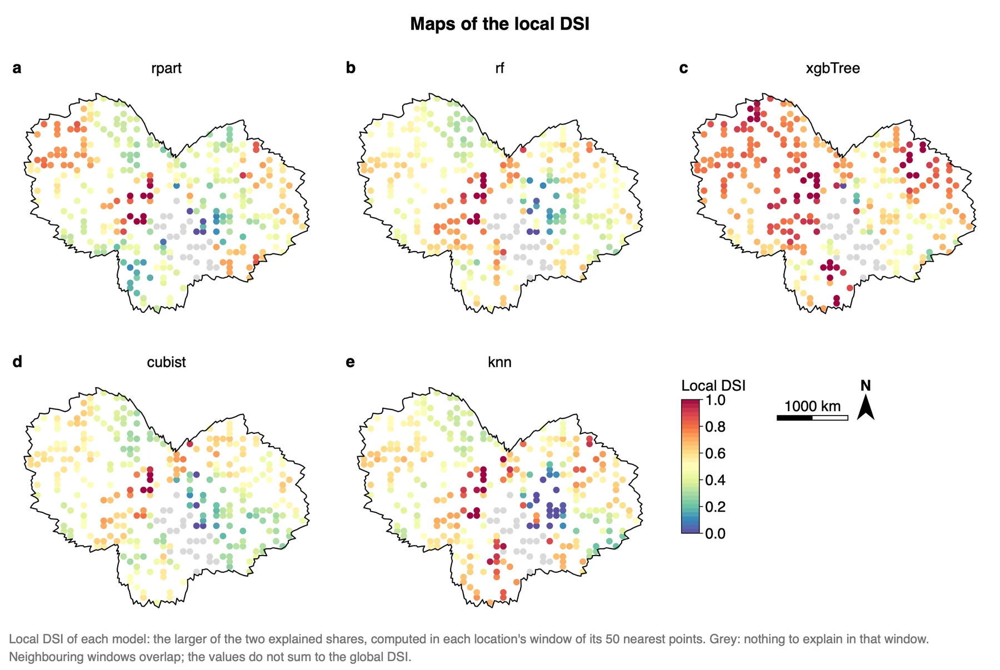
| Model | Median local DSI | Median local ηa | Median local ηh | Global θ₂ |
|---|---|---|---|---|
| xgbTree | 0.731 | 0.723 | 0.678 | 0.601 |
| knn | 0.551 | 0.398 | 0.510 | 0.433 |
| rf | 0.515 | 0.352 | 0.504 | 0.445 |
| cubist | 0.491 | 0.297 | 0.442 | 0.416 |
| rpart | 0.459 | 0.423 | 0.396 | 0.423 |
What it shows. Where each model explains the spatial structure of y and where it does not. The run adds a copy of the layer with the fields dsi_local_<model>, eta_a_local_<model>, eta_h_local_<model> and dsi_window_n, the number of points in the window, so you can also style them on the Map page. The medians in the table above were computed from these fields.
How to read it. Compare the same place across the five maps. xgbTree is orange to red over most of the area, which agrees with its global θ. In the south-east of the centre several models are blue: there the residuals keep nearly all of the local structure of y. Neighbouring windows share most of their points, so the maps are smooth by construction, and the local values do not average to the global ones: a window can have a pattern that the whole area does not, and the reverse. A local value is a ratio of two numbers from 50 points and can leave the range 0 to 1 (in the example from −1.30 to 1.66); the colour scale stops at 0 and 1.
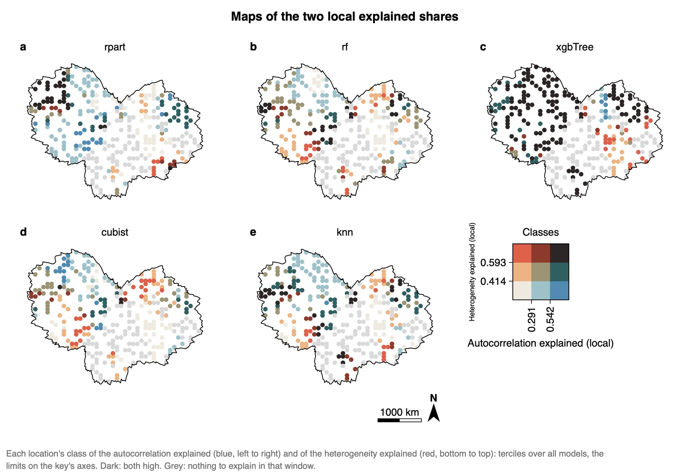
What it shows. The two local shares together. Each is cut into three classes at its terciles over all models (here 0.291 and 0.542 for the autocorrelation explained, 0.414 and 0.593 for the heterogeneity explained; the key's axes give these limits), and the nine combinations get nine colours.
How to read it. Dark points are places where a model explains both characteristics well; pale points are places where it explains neither. Blue points explain autocorrelation but little heterogeneity, red points the reverse. xgbTree is dark over most of the area. For the other models the west is mostly pale to blue and parts of the east are red: the same model explains a different characteristic in different parts of the area. Because the classes are shared by all models, colours can be compared between maps.
How far to trust itThe local DSI is an addition of Heterra 1.6.0. It is not defined in Liu et al. (2026, IJGIS), there is no R reference for it, and its numbers are therefore not checked against R as the tables are. Use it to explore where the models differ, and report the window (50 nearest points, or your distance) with every local number. Several hundred windows tested at 0.05 give some false positives.
"A local DSI was computed in windows of the 50 nearest test points (Heterra 1.6.0), where the window showed significant positive autocorrelation of y (p < 0.05) or a q of y above 0.05. Its median is highest for xgbTree (0.73) and lies between 0.46 and 0.55 for the other models; all models have low values in the south-east of the centre of the study area (Figure X)."
Export a figure from the Chart page as PDF or SVG (vector) or PNG at 300 dpi; Data CSV saves the numbers behind it. Export results in the panel writes a report of the run with the method, the steps, the figures and the tables (Part 1). The report does not yet include the local values.
3.6 Reading the results together
The outputs tell one story in three parts: what structure the data have (δ₀), how much of it each model explains (η and θ), and whether the most accurate model is also the one that explains the most structure. The last part is the main finding of a DSI analysis. Read them in this order:
- Autocorrelation and heterogeneity explained (δ, η): the structure in y first, then what is left in the residuals of each model.
- θ range by model: the ranking of the models, and how wide each range is.
- DSI and accuracy metrics: the models on which the two rankings disagree.
- Strata and diagnostics: what you must state as a limit before you write: a response without significant autocorrelation, a negative η, a wide θ range, strata with few points.
- Local DSI: where on the map the models explain the structure, as an exploration after the global results.
What DSI is notIt does not replace accuracy. The two often agree in part, and DSI finds the models on which they disagree. Choose a model by reading both. The DSI of the tables is one value for the whole study area; the local maps of section 3.5 show where a model explains the structure, with the limits named there.
3.7 From the results to a manuscript
| Section | What to write | From Heterra |
|---|---|---|
| Methods | The two spatial characteristics and their indicators; η and the θ range; the list of models and how the residuals were held out; k, the distance and how the strata were made | Table Settings used; the settings of the run (in the exported report) |
| Results | Follow the order accuracy, DSI, disagreement. Give δ₀ before any η. Every finding has a number. State the limits that the diagnostics flag | Tables Spatial autocorrelation and heterogeneity explained (δ, η) and DSI results (Table 3); figures θ range by model and DSI and accuracy metrics; table Diagnostics |
| Discussion | Why accuracy and spatial interpretability disagree: a model can lower its errors by smoothing towards the local mean, and still leave the spatial arrangement of the errors as it was. Whether the ranking holds with another k and other strata | Figure DSI and accuracy metrics; a second run with another k or with k-means strata (both runs stay in History) |
- Use held-out residuals. The training residuals of an overfitted model give a false η near 1.
- The strata of q come from the predictors, never from y. Strata cut from y push its own q towards 1, and η then has no meaning.
- The strata are not neutral: tree strata and k-means strata can rank the models differently on heterogeneity. Name the rule in the Methods, and report both rankings if they differ.
- Distances must be right for your region. Outside Australia choose great-circle distances, or the nearest neighbours and Moran's I are wrong.
4Exercises
Exercises 1 to 3 use the example. Exercise 4 is for your own data.
Exercise 1Read
Run the example with its settings. Which model has the largest θ₃, and what are its η for autocorrelation and for heterogeneity? Which model has the smallest θ₁?
Answer
xgbTree: θ₃ = 0.736, with ηa = 0.339 and ηh = 0.601. cubist has the smallest θ₁ (0.098), which is its η for autocorrelation.
Exercise 2Explore
Open the table Spatial autocorrelation and heterogeneity explained (δ, η) from the Outputs list. Whose residuals keep the most spatial autocorrelation, and how does their Moran's I compare with that of y? Then open the Map page: how many strata was q computed on?
Answer
cubist: its residuals have a Moran's I of 0.588 against 0.652 for y, so almost all of the autocorrelation is still there (ηa = 0.098). The legend of dsi_stratum lists 8 strata.
Exercise 3Interpret
A colleague writes: "Random forest has the highest R², so it also explains the spatial structure of y best." Check this against the two figures and the tables. Is the sentence justified?
Answer
No. rf has the best R² (0.365), RMSE and MAE, but its θ₃ (0.516) is only the fourth-highest of five. Its residuals keep a Moran's I of 0.568 of the 0.652 in y (ηa = 0.129). xgbTree, with a lower R² (0.274), has θ₃ = 0.736. Accuracy and spatial interpretability are different properties and have to be reported separately.
Exercise 4Your data
Fit at least two models to your own data in the software you normally use, with a test set or cross-validation. Build the table of section 2.1 and run DSI. Write three sentences for a results section: one on the structure in the data (δ₀ of Moran's I and of q), one on what each model explains (η and θ₁ to θ₃), and one comparing the DSI ranking with the accuracy ranking. Export the comparison figure as PDF.
Checklist
Do the residuals come from points the models did not see? Are the coordinates WGS84 degrees, and did you choose great-circle distances outside Australia? Did you look at the map of dsi_stratum and at the Diagnostics table? Did you report k, the distance and how the strata were made? Does each sentence give a number?
References
- Liu, H., Song, Y. & Yi, W. (2026). Degree of spatial interpretability. International Journal of Geographical Information Science. doi:10.1080/13658816.2026.2614335
- Liu, H., Song, Y., Yi, W. & Zhang, P. (2026). Degree of geocomplexity for diagnosing spatial pattern loss beyond prediction accuracy. GIScience & Remote Sensing 63(1): 2657087. doi:10.1080/15481603.2026.2657087
- Wang, J.-F. et al. (2010). Geographical detectors-based health risk assessment and its application in the neural tube defects study of the Heshun Region, China. International Journal of Geographical Information Science 24(1): 107–127.
Heterra guide, for version 1.6.0. © 2026 Yongze Song. Documentation and tutorial data: CC BY 4.0.